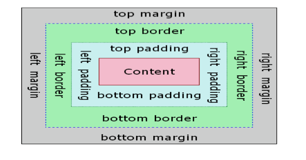
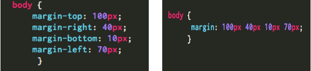
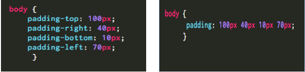
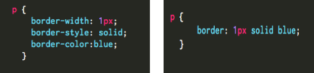

In this blog I have presented my thoughts and impression about DBC's culture and approach to learning based on Shareef's Fireside Chat. I have also expressed my ideas about how I see myself engaging with the type of culture at DBC and how excited I am to participate in this kind of learning environment.
Read More
According to the box model concept, every element on a page is a rectangular box and there are several properties that determine the size of the box such as width, height, padding, borders and margins. The width and height properties are used to determine the core width and height of the box.
The image below illustrates the CSS box- model. As you can see, each box is made of layers from outermost to innermost. Content is at the center of the box and consists of either text or images.

Margin:
Margin is the space around the element. It falls outside of any border and are completely transparent in color. We can adjust the margin to move our HTML elements closer to or farther from each other. The larger the margin, more is the space around the element. Depending on the element, browsers apply the default margins to an element to help with legibility and clarity. CSS reset can be used to tone all the default values to zero. The margin for each side of an element can be either explicitly specified or combined into a more elegant compilation as shown:

Padding:
Padding is the space between the border and the content. It falls inside of an element’s border and can be adjusted to move the border closer to or farther from the content. Similar to margin, padding for each side of an element can be either explicitly specified or combined into a more elegant compilation as shown :

To set unique margin and padding values for all four sides of an element, specify those values in the order of top, right, bottom, and left, moving clockwise.
Borders:
Borders determine the edge of an element and separates the padding from the margin. The border property takes three values; width, style and color. Shorthand values for the border property are stated in that order—width, style, color. In longhand, these three values can be broken up into the border-width, border-style, and border-color properties.

Summary
Margins provide some breathing room between different elements on the page. Borders create a frame around the box. Padding moves the content towards/away from the border.
I hope this blog post has helped you get a better understanding about the concepts behind margin, padding and border. Each one of these should be used appropriately to attain the desired look of the web page.